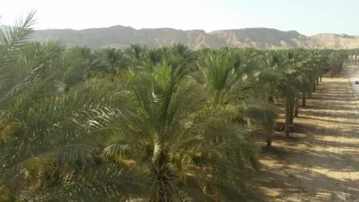

פתרונות לענף התמרים
ענף התמרים הוא מענפי החקלאות המובילים, וממנו מתפרנסים יישובים רבים לאורך הגבול המזרחי. ערדום מספקת למגדלים מערכת איסוף מידע חקלאי אונליין, עד רמת העץ הבודד.

להגדיל תפוקות ולייעל את הגידול
כדי להוביל את הענף בארץ ובעולם, היישומים שלנו מחברים בין העבודה בחלקה, מחשבי ההשקיה, בית האריזה והמו"פ.
- אפליקציות לתיעוד פעולות חקלאיות ברמת החלקה וברמת העץ הבודד.
- מעקב יומי אחר ביצוע משימות, וכלים לבדיקת התפוקה של צוותי העובדים.
- ממשקים אוטומטיים ממחשבי ההשקיה.
- ממשקים בין בית האריזה לחלקה, לקליטה אוטומטית של איכות התמרים.
- תמחיר גידול.
- שידור נתונים למו"פ חקלאי.
כניסה למערכות
מסד נתונים תמריקה
מערכת מידע לאיסוף נתונים במטע תמרים באמצעות אפליקציות, עם דוחות ניתוח מתקדמים לניהול המטע, ההשקיה, העובדים והתמחיר.
לכניסהJULIE
אפליקציה לתיעוד פעולות במטע ברמת החלקה: ניהול שעות עבודה, מים וכלים.
לכניסהVIKA
אפליקציה לתיעוד פעולות ברמת העץ ולניהול עובדים, עם דוחות אונליין למנהל המטע ודיווח בברקודים בזמן אמת.
לכניסה
מערכת מידע כוללת
היצואן הגדול בישראל: עקיבות וניהול מקצה לקצה, קטלוג פריטים אחד ואינטגרציה של גידול, בקרת איכות, אריזה, שיווק ויצוא תמרים.
תיעוד מידע חקלאי
תיעוד ואיסוף נתונים בחקלאות של הערבה הדרומית לצורכי מחקר ושיפור שיטות הגידול.
מגדלים תמרים?
נשמח להראות איך תמריקה, JULIE ו-VIKA עובדות בשטח.